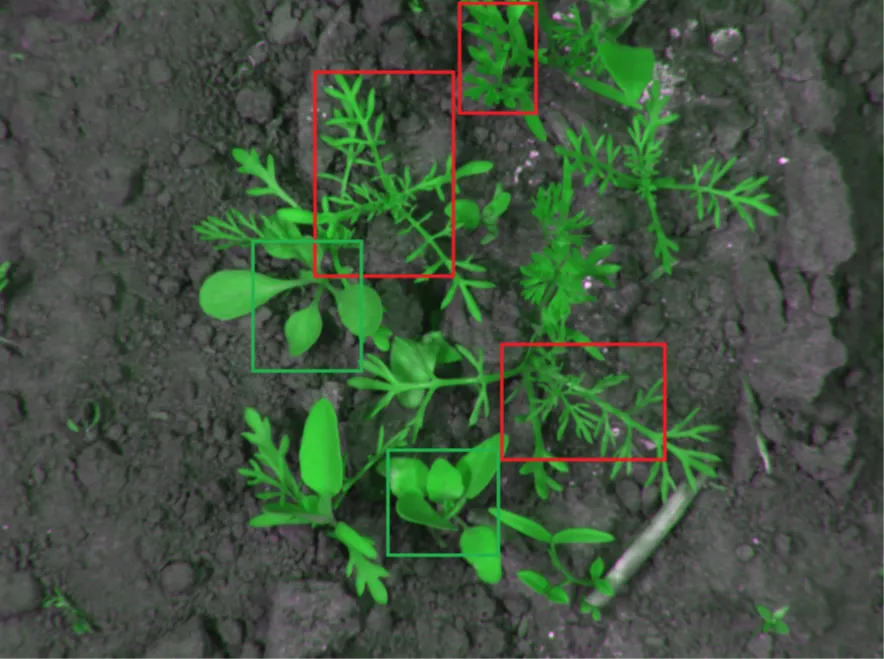
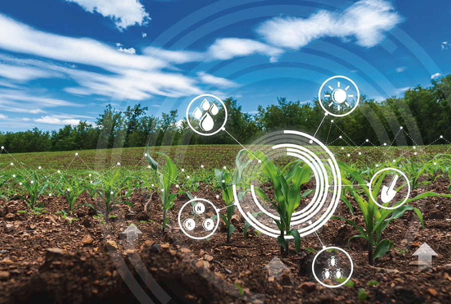
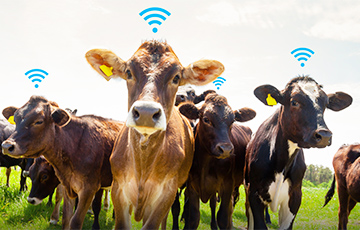
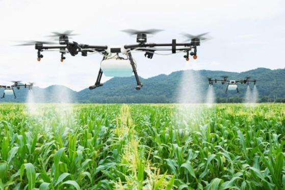
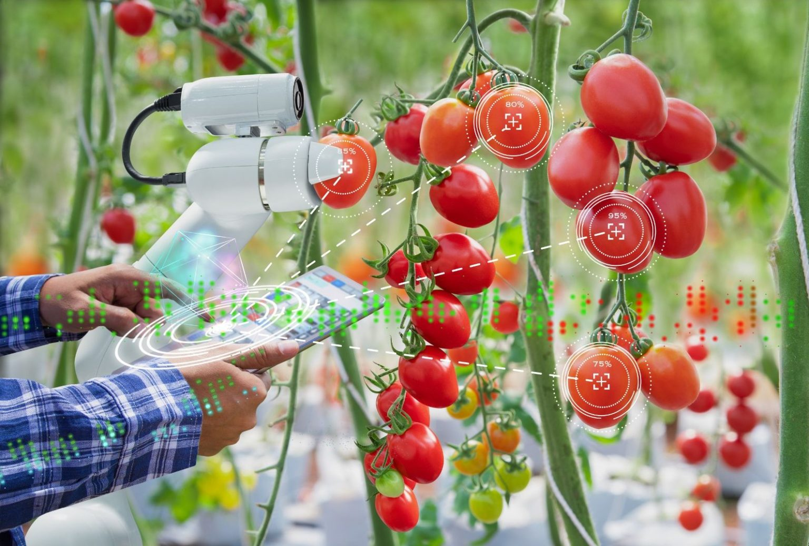

Loading...
Agriculture
Agriculture

Weed Control
The smart devices are designed to cost less than herbicides and can be adapted to dozens of crops – conventional or organically grown. They eliminate the need for manual labour and allow the most selective application of any herbicide.

Disease detection
These techniques are based on image processing, maging techniques, remote sensing and spectroscopy and can be used to realize devices in real-time environments. Using these techniques, over 70% accuracy was achieved, but more improvements were needed for reliable plant disease detection.

Weather forecasting
AI can reduce the workload of meteorologists, thereby improving the accuracy of weather forecasts. Also, new workflows leverage better weather models to improve business decisions, operations and responses to weather events.

Stock management
Livestock management solutions can be used to monitor livestock. Ranchers and farmers can use drones to manage and monitor livestock and get an aerial view.

Water level probe
Image result: water level monitoring for agriculture using AI. AI can be used to reduce pollution in water, which in turn reduces water pollution and the scarcity of clean water. AI can be used to detect the amount and composition of toxic pollutants as AI works inoptics increasing the efficiency of waste management systems.

Plant growth level
AI allows farmers to simplify crop selection and determine the profitability of their crops. Also, AI has opened the door to better underestimation of yield rates and crop quality levels. It helps agricultural companies and farmers to predict the total quantity produced and establish pricing strategies for each crop.
Services


© Adople AI, All Right Reserved.